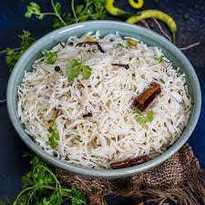

Jeera Rice is a flavorful and aromatic rice dish cooked with cumin seeds. It's a perfect accompaniment for a variety of curries and is simple yet incredibly tasty.
Ingredients
- 1 cup Basmati Rice
- 1 tbsp Cumin Seeds
- 1 Onion, finely sliced
- 1 Green Chili, slit
- 2 tbsp Oil or Ghee
- 1/2 tsp Turmeric Powder
- Salt to taste
- Fresh Coriander for garnish
Step-by-Step Instructions
- Rinse the rice and soak it for 30 minutes, then drain.
- Heat oil or ghee in a pan and add cumin seeds. Once they splutter, add the sliced onions and green chili.
- Sauté until onions turn golden brown, then add turmeric powder and salt.
- Add the rice and stir for a couple of minutes. Add 2 cups of water and bring to a boil.
- Reduce the heat, cover, and simmer for 15-20 minutes until the rice is cooked and water is absorbed.
- Garnish with fresh coriander and serve hot with your choice of curry.